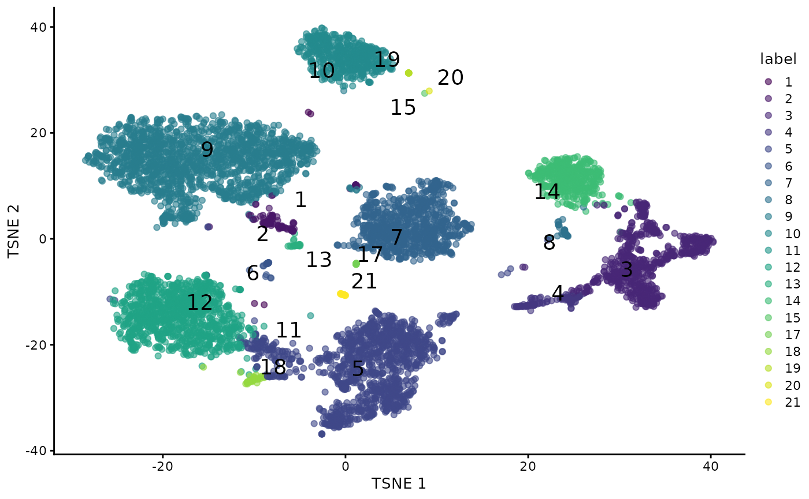
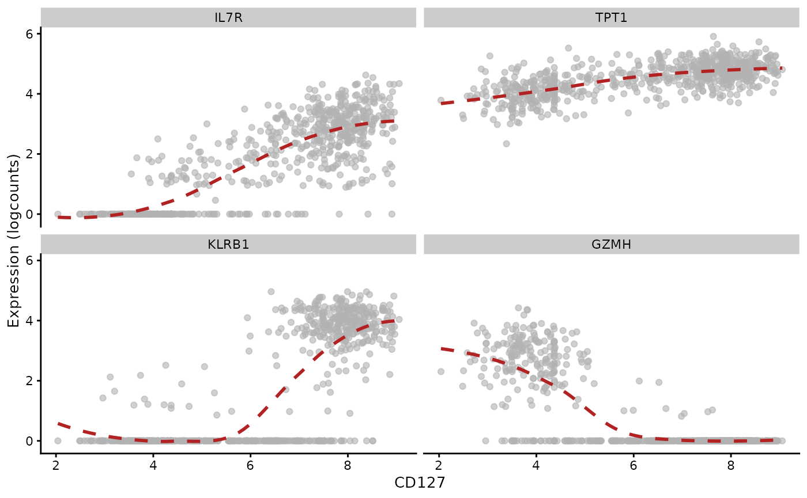

vignettes/compch12.Rmd
compch12.RmdThis vignette endeavors to put Bioconductor and scvi-tools together to help understand how different data structures and methods relevant to CITE-seq analysis contribute to interpretation of CITE-seq exeperiments.
The scvi-tools tutorial (for version 0.20.0) analyzes a pair of 10x PBMC CITE-seq experiments (5k and 10k cells). Chapter 12 of the OSCA book analyzes only the 10k dataset.
ch12sce = get_ch12sce()
ch12sce## class: SingleCellExperiment
## dim: 33538 7472
## metadata(2): Samples se.averaged
## assays(2): counts logcounts
## rownames(33538): ENSG00000243485 ENSG00000237613 ... ENSG00000277475
## ENSG00000268674
## rowData names(3): ID Symbol Type
## colnames(7472): AAACCCAAGATTGTGA-1 AAACCCACATCGGTTA-1 ...
## TTTGTTGTCGAGTGAG-1 TTTGTTGTCGTTCAGA-1
## colData names(3): Sample Barcode sizeFactor
## reducedDimNames(0):
## mainExpName: Gene Expression
## altExpNames(1): Antibody Capture
fullvi = get_totalVI_5k10k_adata()
fullvi## AnnData object with n_obs × n_vars = 10849 × 4000
## obs: 'n_genes', 'percent_mito', 'n_counts', 'batch', '_scvi_labels', '_scvi_batch', 'leiden_totalVI'
## var: 'highly_variable', 'highly_variable_rank', 'means', 'variances', 'variances_norm', 'highly_variable_nbatches'
## uns: '_scvi_manager_uuid', '_scvi_uuid', 'hvg', 'leiden', 'log1p', 'neighbors', 'umap'
## obsm: 'X_totalVI', 'X_umap', 'denoised_protein', 'protein_expression', 'protein_foreground_prob'
## layers: 'counts', 'denoised_rna'
## obsp: 'connectivities', 'distances'
totvi_cellids = rownames(fullvi$obs)
totvi_batch = fullvi$obs$batch
totvi_latent = fullvi$obsm$get("X_totalVI")
totvi_umap = fullvi$obsm$get("X_umap")
totvi_denoised_rna = fullvi$layers$get("denoised_rna")
totvi_denoised_protein = fullvi$obsm$get("denoised_protein")
totvi_leiden = fullvi$obs$leiden_totalVI
is5k = which(totvi_batch == "PBMC5k")
totvi_cellids = totvi_cellids[-is5k]
totvi_latent = totvi_latent[-is5k,]
totvi_umap = totvi_umap[-is5k,]
totvi_denoised_rna = totvi_denoised_rna[-is5k,]
totvi_denoised_protein = totvi_denoised_protein[-is5k,]
totvi_leiden = totvi_leiden[-is5k]In this section we reduce the cell collections to cells common to the chapter 12 and totalVI datasets.
comm = intersect(totvi_cellids, ch12sce$Barcode)
# select and order
totvi_latent = totvi_latent[comm,]
totvi_umap = totvi_umap[comm,]
totvi_denoised_rna = totvi_denoised_rna[comm,]
totvi_denoised_protein = totvi_denoised_protein[comm,]
totvi_leiden = totvi_leiden[comm]
# organize the totalVI into SCE with altExp
totsce = SingleCellExperiment(SimpleList(logcounts=t(totvi_denoised_rna))) # FALSE name
nn = SingleCellExperiment(SimpleList(logcounts=t(totvi_denoised_protein))) # FALSE name
reducedDims(nn) = list(UMAP=totvi_umap)
altExp(totsce) = nn
altExpNames(totsce) = "denoised_protein"
totsce$leiden = totvi_leiden
altExp(totsce)$leiden = totvi_leiden
altExp(totsce)$ch12.clusters = altExp(ch12sce[,comm])$label
colnames(ch12sce) = ch12sce$Barcode
ch12sce_matched = ch12sce[, comm]The TSNE projection of the normalized ADT quantifications and the walktrap cluster assignments are produced for the cells common to the two approaches.
## Warning: Removed 1 rows containing missing values (`geom_text_repel()`).
This heatmap uses precomputed cluster averages that are lodged in the metadata element of the SingleCellExperiment. Colors represent the log2-fold change from the grand average across all clusters.
adt_profiles(ch12sce_matched)We enhance the annotation of the list of subclusters retrieved using get_ch12_allsce and then drill into mRNA-based subclusters of ADT-based cluster 3 to compare expression levels of three genes.
ch12_allsce = get_ch12_allsce()
ch12_allsce = lapply(ch12_allsce, function(x) {
colnames(x)= x$Barcode;
cn = colnames(x);
x = x[,intersect(cn,comm)]; x})
of.interest <- "3"
markers <- c("GZMH", "IL7R", "KLRB1")
plotExpression(ch12_allsce[[of.interest]], x="subcluster",
features=markers, swap_rownames="Symbol", ncol=3)There is a suggestion of a boolean basis for subcluster identity, depending on low or high expression of the selected genes.
Following the exploration in OSCA chapter 12, cluster 3 is analyzed for a regression association between expression measures of two genes and the ADT-based abundance of CD127.
plotExpression(ch12_allsce[["3"]], x="CD127", show_smooth=TRUE, show_se=FALSE,
features=c("TPT1", "GZMH"), swap_rownames="Symbol")## `geom_smooth()` using method = 'loess' and formula = 'y ~ x'